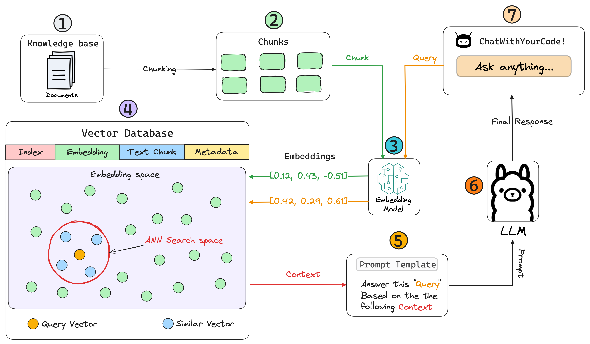

Modelos de Linguagem de Grande Escala (LLMs, do inglês Large Language Models) são modelos de inteligência artificial treinados em vastas quantidades de dados textuais para entender e gerar linguagem humana. Esses modelos utilizam técnicas avançadas de aprendizado de máquina, como redes neurais profundas, para capturar padrões complexos na linguagem. Eles podem realizar uma variedade de tarefas relacionadas ao processamento de linguagem natural (NLP), como tradução automática, resumo de textos, respostas a perguntas e geração de conteúdo. Exemplos conhecidos de LLMs incluem o GPT-4, desenvolvido pela OpenAI, que pode gerar textos coerentes e contextualmente relevantes em diversas situações.
Esses modelos são treinados em grandes volumes de texto retirados de livros, artigos, websites e outras fontes, o que lhes permite adquirir um vasto conhecimento sobre diferentes tópicos e estilos de escrita. Durante o treinamento, os LLMs aprendem a prever a próxima palavra em uma sequência de palavras, o que os torna capazes de gerar texto que parece ter sido escrito por um humano. Apesar de sua utilidade, os LLMs também levantam questões éticas, como o potencial para gerar desinformação, viés nos dados e a necessidade de supervisão humana em suas aplicações.
Executar LLMs em celulares é desafiador devido às limitações de recursos, como memória, poder de processamento e armazenamento, que são insuficientes para suportar modelos de grande escala. Além disso, o alto consumo de energia e o aquecimento gerado pelo processamento intensivo podem rapidamente esgotar a bateria e afetar o desempenho do dispositivo. Devido a essas limitações, a maioria das implementações de LLMs em celulares depende da computação em nuvem, onde o processamento pesado é feito remotamente.
No LuxAI, nos especializamos em vencer essas barreiras, desenvolvendo aplicações móveis com LLMs utilizando técnicas estado-da-arte, como Prompt Engineering e RAG para conseguir obter boas respostas de modelos menores, aplicados a contextos específicos, tudo executado localmente para garantir a segurança dos dados dos usuários.
Imagem adaptada de Lightning AI
2020 All Rights Reserved. Design by Free html Templates Distributed by ThemeWagon